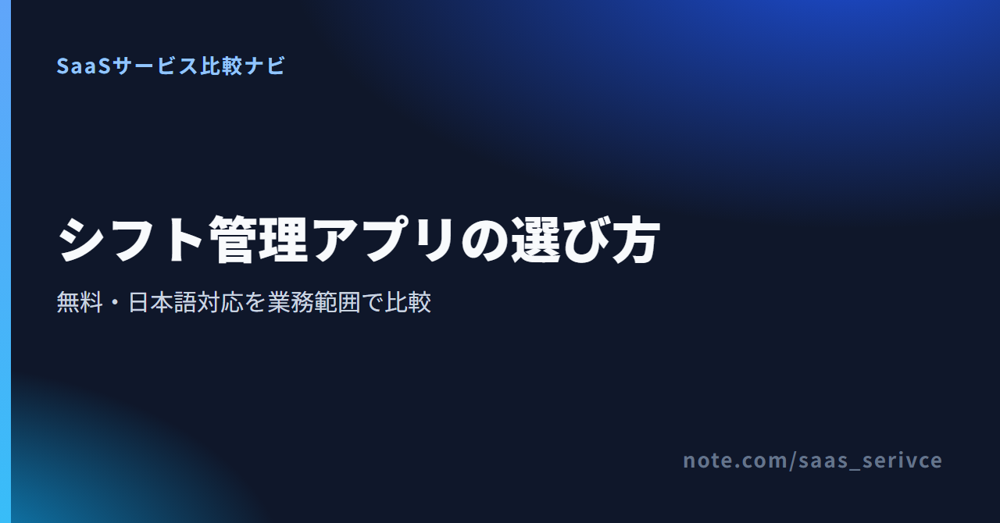
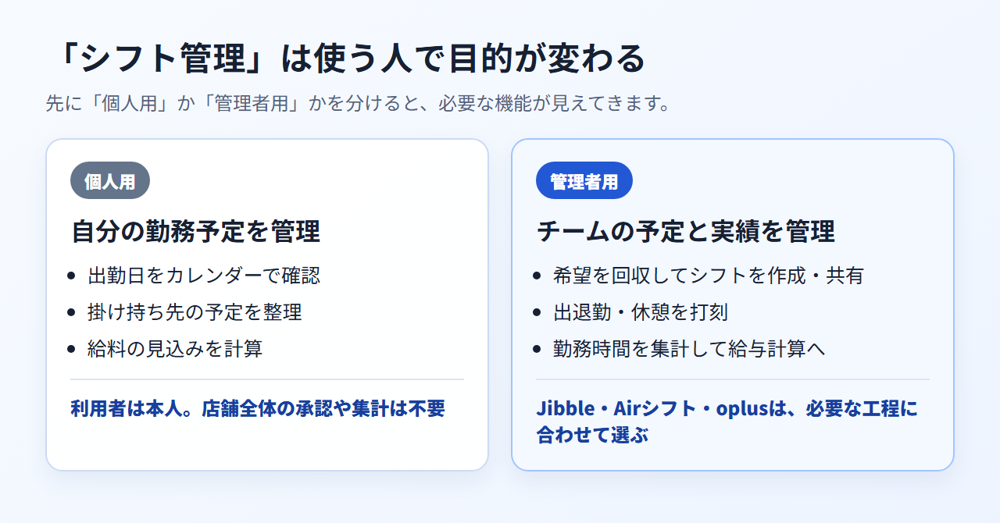

スタッフから届く希望を転記し、欠員や重複を直したら、確定したシフトを連絡します。出勤後は打刻を集め、月末に勤務時間を集計します。人数が少ない職場でも、こうした作業が紙、表計算ソフト、チャットに分かれていると、管理者の確認はなかなか終わりません。
ただし、「シフト管理アプリ」が指す範囲は製品によって違います。自分の勤務予定を記録する個人用アプリもあれば、店舗やチームの打刻・勤怠実績を管理するサービスもあります。「無料」だけを手掛かりにせず、希望回収、シフト作成、共有、打刻、集計のどこまで必要かを先に決めておきましょう。
この記事では、管理者向けの候補としてJibbleを取り上げ、Airシフトとoplusも同じ基準で比べます。3製品はいずれも未契約のため、操作感には踏み込みません。公式情報で確認できる無料枠、日本語対応、希望回収、打刻の範囲から、自社に合うサービスを見分けます。
ユーザー数を気にせず無料で始め、日本語画面で打刻とタイムシートを管理したい事業者には、Jibbleが候補です。 固定・フレックス・週単位フレックスの勤務スケジュールを作り、複数のスケジュールへメンバーを割り当てる機能もあります。一方、希望回収、欠員調整、複雑な条件による自動作成を主目的にするなら、Jibbleをシフト管理の第一候補にはできません。
Jibbleを候補にできるのは、次のような事業者です。
反対に、次の条件が欠かせないなら、Jibbleだけで決めず国内向けサービスも比較する必要があります。
希望回収から共有までを一つにまとめるならAirシフト、必要人数や勤務間隔を条件にした自動作成まで求めるならoplusが比較候補です。打刻とタイムシートを無料で始めたい職場にはJibbleが合います。3製品は得意な工程が違うため、「無料」だけでは順位を付けられません。
自分の勤務予定や給料見込みだけを管理したい人には、Jibbleのような管理者向けサービスより、個人用アプリのほうが目的に合います。
Jibbleの公式サイトでは、無料枠の概要と日本語の製品情報を確認できます。まずは自社が必要とする業務範囲と照らし合わせてください。
個人用は自分の予定を把握するもの、管理者用は複数人の勤務予定と実績を扱うものです。 同じ「シフト管理」という名前でも、導入する人、必要な機能、料金の考え方が異なります。

アルバイトやパートとして働く人が欲しいのは、自分がいつ出勤するかを見返せるカレンダー、複数勤務先の予定整理、給料の見込み計算といった機能です。利用者は基本的に本人であり、他のスタッフの出退勤を承認したり、店舗全体の勤務実績を締めたりする必要はありません。
この目的なら、組織を作成してスタッフを招待する勤怠管理サービスは機能が多すぎることがあります。無料かどうかに加えて、入力の手間、掛け持ちへの対応、必要な通知、自分の端末でのデータ管理方法まで見ると選びやすくなります。
店長や管理者は、スタッフの希望を集めて勤務予定を作り、確定内容を共有したうえで、実際の出退勤を記録します。月末には遅刻、早退、休憩、残業などを確認し、給与計算へ渡せる状態に整えなければなりません。
比較するときは「予定」と「実績」を分けて考えます。シフト作成に強い製品が打刻やタイムシートまで備えているとは限らず、勤怠管理に強い製品が複雑なシフトを自動で組めるとも限りません。打刻とタイムシートを中心に据えているのがJibbleです。勤務スケジュールは固定・フレックス・週単位フレックスに対応し、複数スケジュールの作成とメンバー割当もできますが、希望回収、欠員調整、条件付き自動作成の対応は公式情報から確認できません。
製品数を増やすより、必要な業務を同じ基準で比べたほうが選びやすくなります。 「シフト管理 アプリ 比較」で候補を探すときは、次の4点を順番に確認すると、用途の違う製品を同列に扱わずに済みます。
3製品の大まかな違いは次のとおりです。
最初に、今もっとも時間がかかっている作業を切り分けます。スタッフから希望日を集めること、必要人数を満たす勤務表を作ること、確定後の変更を全員へ知らせることは、それぞれ別の機能です。
「作成を支援する機能」と「条件に基づいて自動で組む機能」も同じではありません。Jibbleでは固定・フレックス・週単位フレックスの勤務スケジュールを作成し、複数スケジュールへメンバーを割り当てられます。作成した勤務スケジュールの公開も案内されています。ただし、希望回収、欠員調整、必要人数や資格を考慮した条件付き自動作成は公式情報から確認できません。
Airシフトは、スタッフ用アプリから集めた勤務希望と休み希望をシフト表へ反映し、調整後のシフトをスタッフへ共有できます。oplusも希望提出・管理・確定に対応し、有料オプションでは必要人数、出勤日数の均等化、勤務間隔などを条件にした自動作成が可能です。希望の転記をなくしたいならAirシフト、条件付きの割り当てまで任せたいならoplusをJibbleと並べて検討します。
予定を作った後の実績管理まで一本化したいなら、打刻方法と集計の流れを見ます。JibbleのFreeには、Webとモバイルからの打刻、タイムシート、GPS、顔認証、レポート出力が含まれます。店舗の端末だけで打刻するのか、外出先や複数拠点からも記録するのかを決めると、必要な機能を絞れます。
給与計算との連携では、Xero、QuickBooks Online、Deelのほか、CSV／XLSによる出力とAPIが案内されています。一方、日本固有の給与ソフトとの直接連携は公式情報から確認できません。
出退勤・休憩の打刻と労働時間の集計に加え、Airシフトはfreee人事労務へのデータ連携も案内しています。oplusでは打刻と勤怠管理が「Pro＋勤怠」プランの対象です。無料枠だけで打刻まで試すならJibbleが合います。国内給与ソフトとの直接連携ならAirシフト、シフト自動作成と勤怠を一つの製品で拡張するならoplusを選びます。
無料には、期限のない無料プラン、人数や機能を制限した無料プラン、一定期間だけ全機能を試せるトライアルがあります。この三つを混同すると、試用後に必要な機能が使えなくなったり、想定外の有料契約が必要になったりします。
JibbleのFreeは永久無料で、ユーザー数に上限がありません。登録時には有料機能を試せる14日間の無料トライアルが始まり、終了後は有料契約へ移るかFreeを続けるかを選べます。公式ページ間で有料プラン名が一致していないため、トライアル対象を特定のプラン名では断定できません。
oplusのスタンダードプランは100ユーザーまで無料ですが、打刻・勤怠管理と自動シフト作成は無料枠に含まれません。利用開始月と翌月を無料体験期間とするAirシフトは、終了後に自動課金される仕組みではありません。Jibbleは期限なく打刻を使え、oplusは希望提出と確定を無料で運用できます。国内店舗向けの一連の操作を試してから契約するのが、Airシフトの無料体験です。
「日本語対応」も一つの項目ではありません。管理画面と従業員画面を日本語で使えること、日本語のヘルプを読めること、問い合わせへ日本語で回答してもらえること、日本の勤怠制度に沿って設定できることは別々に確認します。
Web、iOS／Androidのモバイルアプリ、macOS／Windowsのデスクトップアプリでは、Jibbleを日本語で使えます。日本語ヘルプセンターもあります。ただし、有人窓口が日本語で回答するとは公式に明記されていません。機能としては休憩、日次・週次・休日の残業、休暇管理を確認できますが、36協定を含む日本法への準拠は確認できないため、国内制度への適合を製品任せにはできません。
国内向けのAirシフトとoplusは、どちらも日本語で提供されています。電話とメールによる相談窓口があるAirシフトは、日本語の有人支援を重視する職場でJibbleとの違いが明確です。oplusは無料デモを用意しており、自動作成で扱いたい条件を導入前に相談できます。
Freeで打刻と勤怠実績の管理を試したい職場には、Jibbleが向いています。 シフト予定の高度な作成より、出退勤の記録と集計を優先する場合に検討するサービスです。
Freeは永久無料で、ユーザー数に上限がありません。基本的な時間記録に加え、Web／モバイル打刻、タイムシート、GPS、顔認証、レポート出力が含まれます。少人数の店舗であっても、スタッフが増えるたびに無料上限へ達する心配をせず、必要な機能を基準に継続可否を判断できます。
たとえば、現場外からの打刻が発生するならGPS、本人確認を重視するなら顔認証、締め作業で勤務実績を取り出したいならレポート出力が比較項目になります。ただし、各機能の設定方法やFreeでの細かな制限まで一括して決めつけず、自社の打刻ルールで試す必要があります。
Jibbleでは、Web、iOS／Android、macOS／Windowsの各アプリで日本語が提供されています。管理者だけが日本語を使えても、毎日打刻する従業員の画面が分かりにくければ定着しません。複数の端末で日本語を選べることは、導入前の説明を減らす材料になります。
一方、Chrome拡張機能の日本語は近日提供予定と案内されています。すべての利用経路が日本語化済みという意味ではないため、Chrome拡張機能を前提にする職場は英語表示でも運用できるかを先に見ておきましょう。
JibbleにはFreeと有料プランがあり、有料契約では月払いと年払いを選べます。しかし、公式ページ間でプラン名が一致せず、日本からの申込画面に出る現行価格と最終請求通貨も公開情報から確定できません。そのため、この記事では有料価格を掲載せず、有料契約も推奨しません。まずFreeと14日間のトライアルで必要機能を分け、有料機能が欠かせない場合に限って申込画面の条件を判断材料にしてください。
公式サイトから無料枠を確認できます。有料契約を検討するときは、申込画面に表示されるプラン名、単価、請求通貨をその場で確認する必要があります。
打刻・タイムシートを優先するならJibbleを試せますが、希望回収や複雑なシフト作成が中心なら別の候補が必要です。 製品を決める前に、予定作成と勤怠実績のどちらへ比重を置くかを決めます。
Jibbleを候補にできるのは、まず出退勤の記録と勤怠実績の集約を整えたい事業者です。Webやスマートフォンで打刻し、タイムシートとレポートを管理する流れを、ユーザー数無制限のFreeから試せます。
モバイルだけでなくWebとデスクトップでも日本語が提供され、GPSや顔認証もFreeの対象です。管理者が日本語ヘルプを参照しながら設定できる職場なら試す余地があります。
Jibbleが向く条件は、次のとおりです。
給与計算までの連携を重視する会社は、自社の給与ソフト名を挙げて、データの受け渡し方法を確認しましょう。「連携あり」という表示だけでは、必要な項目が渡るか、締め後の修正が反映されるかまでは分かりません。
日本の法令や社内規程に沿ったアラート、休暇管理、複雑な自動シフト作成が必要な職場も、国内向けサービスを含めた再比較が必要です。次の条件に当てはまる場合、Jibbleの無料枠だけで決めないほうがよいでしょう。
希望の回収と共有を優先するならAirシフト、必要人数や勤務間隔を含む自動作成を優先するならoplusを確認します。どちらもJibbleとは無料枠と得意分野が違うため、「連携先」「制度対応」「自動作成の条件」「有人支援」の四つを自社要件と照らし合わせてください。
Airシフト：公式サイトで料金を見る
希望シフトの収集から調整、共有、タイムカードまでを国内向けの画面と窓口でまとめたい職場の候補です。
oplus：公式サイトで料金を見る
無料枠で希望提出とシフト確定を始め、必要に応じて自動作成や勤怠管理を追加したい職場に合います。
Freeから有料へ移る前に、決済手段、請求書、解約時点、返金条件を確認しましょう。 海外SaaSでは、日本語画面があっても日本の請求実務と同じとは限りません。
Jibbleの月払いは、クレジットカードまたはPayPalに対応しています。主要クレジットカードに対応すると案内されていますが、JCBや日本発行カードが使えるとは公式に明記されていません。
50人を超えるチームでは、年払いの銀行振込について問い合わせられます。少人数で月払いを検討する場合は、カードまたはPayPalを前提に考え、決済画面に表示される通貨と利用可能ブランドを確かめるのが現実的です。
有料契約では、課金後に請求書が自動発行されます。OrganizationのSubscriptionにあるbilling infoでVAT番号を登録すれば、請求書にも反映できます。一方、購読請求書のダウンロード手順と、日本の適格請求書発行事業者番号は公式情報に明記されていません。消費税を含む税務上の扱いは、必要に応じて税理士に確認してください。
有料プランからFreeへ戻す場合、Webアプリの「Organization Settings」から「Subscriptions」「Manage plan」へ進み、Freeを選びます。解約も同じ管理画面から自分で操作できます。
解約は即時に有効となり、その時点で有料機能へアクセスできなくなります。月払い・年払いはいずれも前払いの自動更新で、解約時を含めて返金や未使用期間のクレジットはありません。契約期間の末日まで有料機能を使える方式だと思い込まず、必要なデータを整理してから操作する必要があります。
なお、組織内の全員が使い続けられるFreeへの変更と、組織やアカウントの削除は別の操作です。アカウントを削除するとデータは即時に削除され、復元できません。費用を止めたいだけなら、先にFreeへの変更で足りるかを判断し、アカウントの削除は必要な場合だけ選びましょう。
有料へ進む際は、申込画面の対応カード、請求通貨、更新周期を確認してください。解約前にはFreeへの変更で残せる機能とデータも整理しておくと判断を誤りません。
導入可否は人数だけでなく、必要な業務範囲から判断します。
希望回収、シフト作成、共有、打刻、集計のうち、無料枠で必要な範囲を満たせる場合に限られます。Jibbleは人数よりも、希望回収や自動作成を必要とするか、国内制度と給与連携を別途補えるかで判断してください。
Web、iOS／Androidのモバイルアプリ、macOS／Windowsのデスクトップアプリは日本語に対応しています。日本語ヘルプセンターもあります。Chrome拡張機能は日本語が近日提供予定で、有人窓口の回答言語も明記されていません。そのため、日本語対応は利用経路ごとに分けて判断します。
同じではありません。シフト作成は「誰がいつ働く予定か」を組む作業で、勤怠管理は「実際にいつ出退勤し、何時間働いたか」を記録・集計する作業です。
シフト表を作る負担だけを減らしたいのか、打刻と月末集計をまとめたいのかで選ぶ製品は変わります。後者を主目的にする場合、Jibbleが候補になります。
シフトの高度な自動作成より、打刻と勤怠実績の集約を優先する事業者には、Jibbleが候補です。 希望回収から共有までを重視するならAirシフト、条件付きの自動作成を重視するならoplusを比較してください。
Jibbleが合う条件は、次の三つです。
追加比較が必要な条件も三つあります。
無料か有料かを先に決めず、希望回収、作成、共有、打刻、集計のうち必要な範囲を書き出してから試すと、製品選びの軸がぶれません。Jibbleで足りない条件が分かった場合は、その条件を国内向けサービスの比較基準にできます。
JibbleならFreeから始められます。管理者と従業員の実際の運用に必要な機能が揃うかを確かめ、有料プランは申込画面の条件を確認してから判断してください。